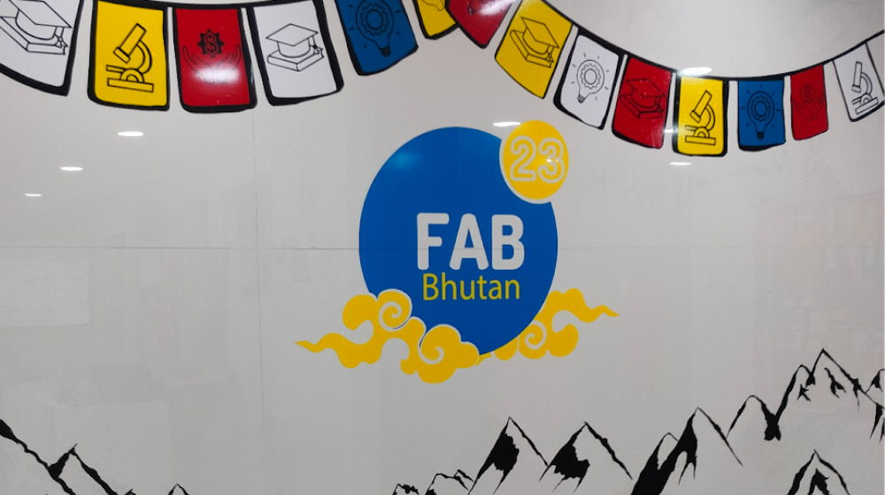
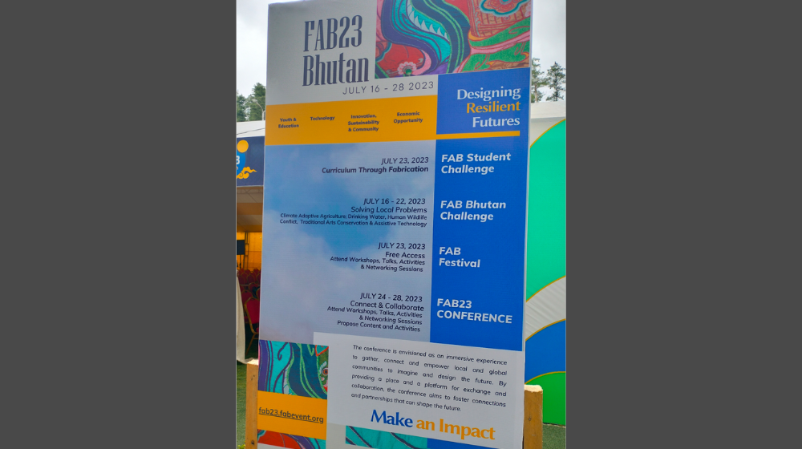
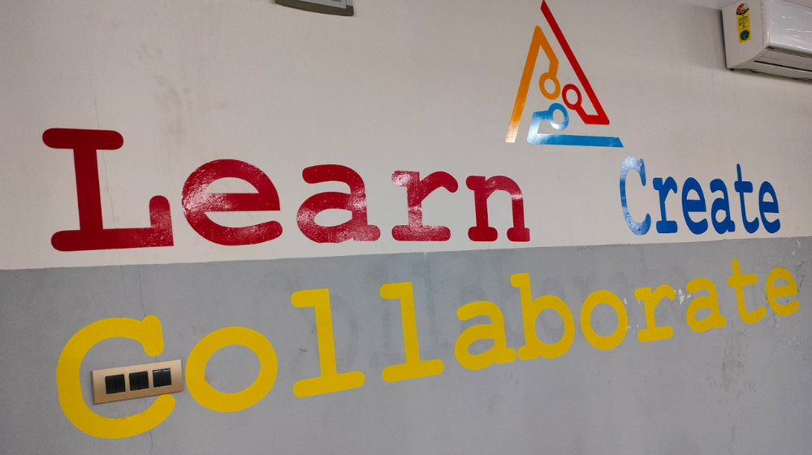
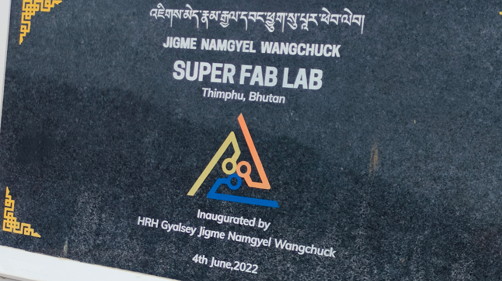
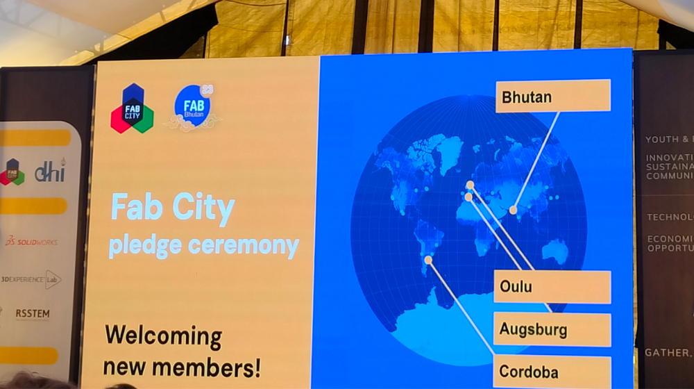

FAB23: A Journey to Bhutan’s Fab Lab Conference
Also posted on Software Sustainability Institute’s blog.

Established in 2009, the Fab Foundation was created with the aim of fostering and nurturing the expansion of the global fab lab network and the establishment of regional capacity-building organisations. Originating from MIT’s Center for Bits and Atoms Fab Lab programme, the foundation’s mission revolves around granting access to tools, knowledge, and financial resources to facilitate education, innovation, and invention through technology and digital fabrication. This enables individuals to create (almost) anything, generating opportunities to enhance lives and livelihoods globally. The primary beneficiaries of the Fab Foundation are community organisations, educational institutions, and non-profit entities.
In July 2023, I had the opportunity to attend my first Fab Lab conference, FAB23 in Thimphu, Bhutan. This 19th edition of the international Fab Lab Conference and Symposium encompassed the Fab Bhutan Challenge, the Fab Festival Thimphu, the FAB23 Conference, and the Fab City Summit. My participation extended across the Festival, Conference, and City Summit.
Main theme and Pillars
Guided by the theme “Designing Resilient Futures,” FAB23 delved into Bhutan’s transformative journey, exploring the interconnected pillars of Technology, Youth and Education, Economic Opportunity, and Innovation, Sustainability, and Community. The overarching goal was to maximise the conference’s impact and address the evolving challenges with a forward-thinking approach.

Fab Festival: Inspiring Local Communities
On July 23rd, 2023, the Fab Festival took place in Thimphu, Bhutan, serving as a one-day public celebration dedicated to showcasing digital fabrication to the local community. This event actively encouraged makers and their families to engage in various activities, such as hands-on workshops, playful competitions, and technical talks delivered by notable makers and innovators. The festival’s primary objectives were to inspire and empower the local community while highlighting the diversity of makers and their contributions from Bhutan and worldwide. Beyond its celebratory nature, the festival served as an educational platform, providing an opportunity for attendees to gain insights into digital fabrication and its potential to foster sustainable solutions for local communities.

FAB23 Conference and Symposium
Taking place from July 24th to 27th, 2023, the FAB23 conference was held at the Jigme Namgyel Wangchuck Super Fab Lab (JNWSFL) in Thimphu, Bhutan. This conference served as a platform for participants to present their work, exchange ideas, collaborate on projects, and learn about the latest trends and developments in digital fabrication and its associated fields. The event encompassed a diverse array of activities, including workshops, talks, panels, and various events. With a mission to cultivate a culture of innovation and sustainability, the conference aimed to motivate both local and international communities to actively participate in digital fabrication, viewing it as a catalyst for positive change under the theme of “Designing Resilient Futures.” Conference attendees engaged in activities such as exploring the latest trends in digital manufacturing, attending informative talks and panels covering diverse topics related to digital fabrication, participating in hands-on and theoretical workshops to acquire new skills and techniques, and networking with global community members to establish valuable connections.

My Contribution: Advocating for Research Software Sustainability
During the Innovation, Sustainability, and Community track at the FAB23 conference, I presented a talk on “Making research software reproducible and sustainable”. This presentation explored the concept of research software and emphasised the importance of making it reproducible. It delved into various approaches and strategies that can be employed to achieve reproducibility in research software, enabling the scientific community to validate and build upon previous work effectively.

Fab City Summit
On July 28, 2023, the Fab City Summit took place, offering a dynamic and interactive experience. With a variety of activities and sessions, the summit aimed to stimulate creative and critical thinking among participants regarding the challenges facing cities today. Engaging in the Fab City Summit provided attendees with a chance to actively contribute to a global conversation on creating sustainable and accessible futures for cities, aligning with a movement that actively shapes the trajectory of urban development.

Conclusion
Having the chance to attend FAB23 was invaluable. The event provided a platform for learning and exploring new ideas and also presented an exceptional networking opportunity. Connecting with professionals, enthusiasts, and experts in the field allowed me to expand my network, exchange insights, and build relationships that can potentially lead to collaborations and future opportunities.
Know more: